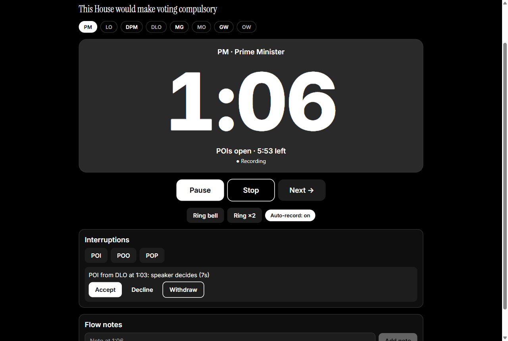
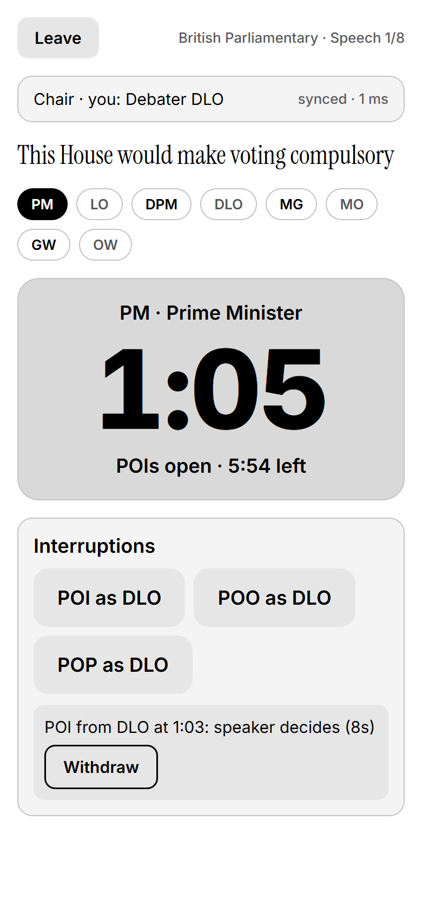
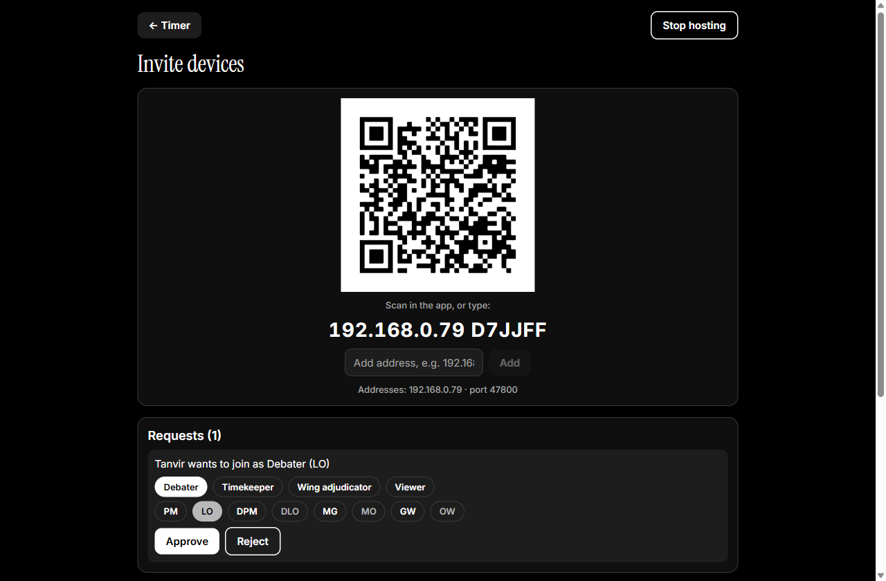
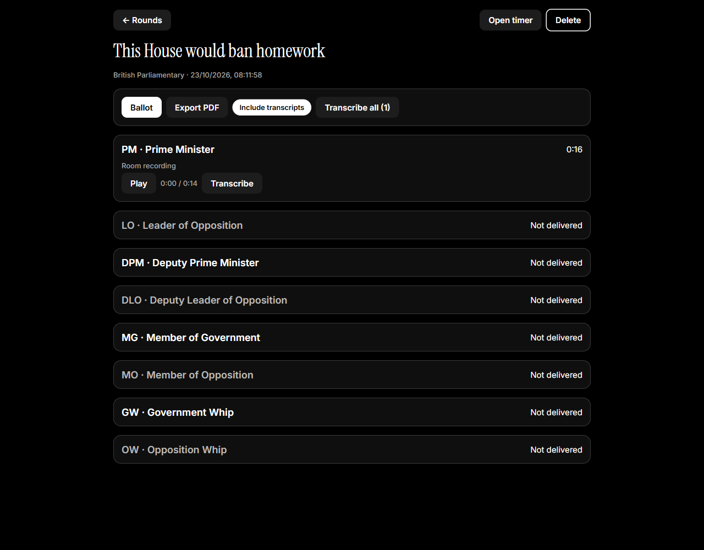
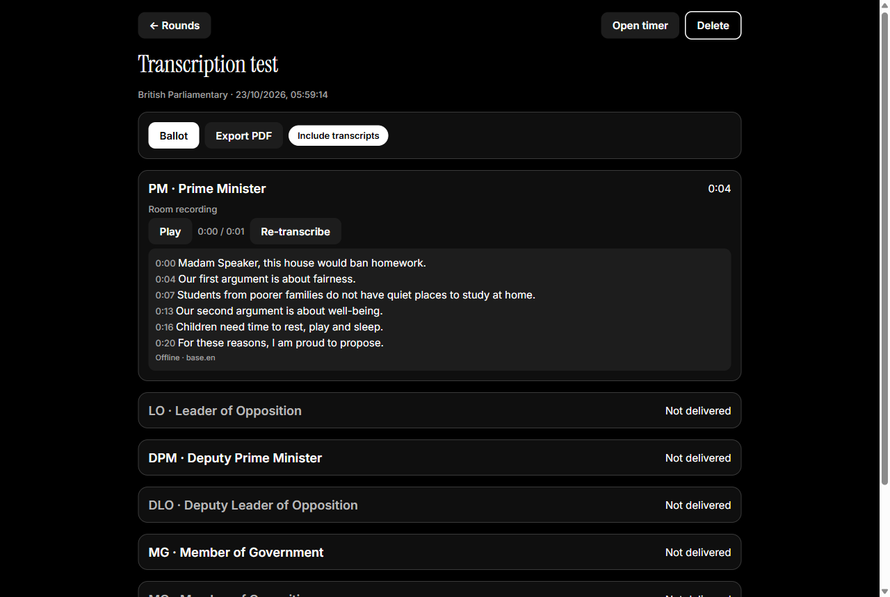

Run the debate room from one phone.
Debate Adjudicator keeps time, rings the bells on every device, takes POIs and points of order from debaters’ phones, records and transcribes the speeches, and fills in the ballot. Offline, for British Parliamentary, UADC and World Schools.


Everything the chair needs, nothing they don’t.
Timekeeping that just works
British Parliamentary, UADC and World Schools presets with protected time, POI window, grace period and overtime, plus bells you can retime.
One room, many devices
Debaters, the timekeeper and wing adjudicators join by QR code over the room’s Wi-Fi or a phone hotspot. Every screen shows the same second.
POIs and points of order
Debaters offer POIs from their phones; the speaker accepts or declines. Points of order pause the clock until the chair rules.
Recordings
The chair records every speech. A debater’s phone records their own accepted POI or point and sends it to the chair.
Offline transcription
Whisper runs on the device, with no internet needed. Optionally use a cloud provider when you’re online. Tap a line to hear it.
Ballots and reports
Speaker scores give BP ranks or the UADC winner automatically, with checks for missing, invalid or tied scores. Export a PDF report.
Private by design
No accounts and no cloud. Flow notes, ballots and transcripts never leave the chair’s device.
Made for any room
Black-and-white light and dark themes, readable across a room and for colour-blind adjudicators. Ready for translation.
From motion to ballot in four steps.
Start the round
The chair picks BP or UADC, enters the motion and taps Invite devices to show a QR code.
Join from any phone
Debaters, the timekeeper and wings scan the code and pick their seat or role. The chair approves each one.
Run the speeches
One clock for the whole room. Bells ring everywhere at once; POIs and points arrive on the chair’s screen.
Decide and report
Transcribe the recordings, score the speakers, mark the ballot final and export a PDF report.



3 formats, ready to go.
These are the default timings. Every length, grace period, POI window and bell can be changed on the device, and new formats can be added with a short definition file.
British Parliamentary
Rules: World Universities Debating Championship (WUDC) rules
| Speech | Side | Length | POIs | Bells |
|---|---|---|---|---|
| PM Prime Minister | Government | 7:00 | 1:00–6:00 | 1:00 single 6:00 single 7:00 double 7:20 continuous |
| LO Leader of Opposition | Opposition | 7:00 | 1:00–6:00 | 1:00 single 6:00 single 7:00 double 7:20 continuous |
| DPM Deputy Prime Minister | Government | 7:00 | 1:00–6:00 | 1:00 single 6:00 single 7:00 double 7:20 continuous |
| DLO Deputy Leader of Opposition | Opposition | 7:00 | 1:00–6:00 | 1:00 single 6:00 single 7:00 double 7:20 continuous |
| MG Member of Government | Government | 7:00 | 1:00–6:00 | 1:00 single 6:00 single 7:00 double 7:20 continuous |
| MO Member of Opposition | Opposition | 7:00 | 1:00–6:00 | 1:00 single 6:00 single 7:00 double 7:20 continuous |
| GW Government Whip | Government | 7:00 | 1:00–6:00 | 1:00 single 6:00 single 7:00 double 7:20 continuous |
| OW Opposition Whip | Opposition | 7:00 | 1:00–6:00 | 1:00 single 6:00 single 7:00 double 7:20 continuous |
UADC (Asian Parliamentary)
Rules: United Asian Debating Championship (Asian Parliamentary) rules
| Speech | Side | Length | POIs | Bells |
|---|---|---|---|---|
| PM Prime Minister | Government | 7:00 | 1:00–6:00 | 1:00 single 6:00 single 7:00 double 7:20 continuous |
| LO Leader of Opposition | Opposition | 7:00 | 1:00–6:00 | 1:00 single 6:00 single 7:00 double 7:20 continuous |
| DPM Deputy Prime Minister | Government | 7:00 | 1:00–6:00 | 1:00 single 6:00 single 7:00 double 7:20 continuous |
| DLO Deputy Leader of Opposition | Opposition | 7:00 | 1:00–6:00 | 1:00 single 6:00 single 7:00 double 7:20 continuous |
| GW Government Whip | Government | 7:00 | 1:00–6:00 | 1:00 single 6:00 single 7:00 double 7:20 continuous |
| OW Opposition Whip | Opposition | 7:00 | 1:00–6:00 | 1:00 single 6:00 single 7:00 double 7:20 continuous |
| OR Opposition Reply | Opposition (reply) | 4:00 | None | 3:00 single 4:00 double 4:20 continuous |
| GR Government Reply | Government (reply) | 4:00 | None | 3:00 single 4:00 double 4:20 continuous |
World Schools (WSDC)
Rules: World Schools Debating Championships rules
| Speech | Side | Length | POIs | Bells |
|---|---|---|---|---|
| P1 First Proposition | Proposition | 8:00 | 1:00–7:00 | 1:00 single 7:00 single 8:00 double 8:20 continuous |
| O1 First Opposition | Opposition | 8:00 | 1:00–7:00 | 1:00 single 7:00 single 8:00 double 8:20 continuous |
| P2 Second Proposition | Proposition | 8:00 | 1:00–7:00 | 1:00 single 7:00 single 8:00 double 8:20 continuous |
| O2 Second Opposition | Opposition | 8:00 | 1:00–7:00 | 1:00 single 7:00 single 8:00 double 8:20 continuous |
| P3 Third Proposition | Proposition | 8:00 | 1:00–7:00 | 1:00 single 7:00 single 8:00 double 8:20 continuous |
| O3 Third Opposition | Opposition | 8:00 | 1:00–7:00 | 1:00 single 7:00 single 8:00 double 8:20 continuous |
| OR Opposition Reply | Opposition (reply) | 4:00 | None | 3:00 single 4:00 double 4:20 continuous |
| PR Proposition Reply | Proposition (reply) | 4:00 | None | 3:00 single 4:00 double 4:20 continuous |
No accounts. No cloud. No signal needed.
Devices talk to each other directly over the room’s Wi-Fi or the chair’s phone hotspot, so it works in basements, halls and anywhere the venue internet gives up.
Speech-to-text runs on the device with Whisper. Cloud transcription is available, but only if you add your own provider and key.
The chair’s flow notes, ballot and transcripts stay on the chair’s device. Other devices only ever receive what they need to run the room.
Android and Windows.
Debate Adjudicator is free and open source. Builds are made from the source code; see the install guide for the current steps.
Before your first tournament
- Download a transcription model on Wi-Fi (Home → Transcription settings).
- Check the bells for your tournament’s rules (Home → Bell settings).
- Plan to run the room from your phone’s hotspot; venue Wi-Fi often blocks devices from seeing each other.
Questions adjudicators ask.
Does it need the internet?
No. Rounds, joining, bells, recording and transcription all work offline. Devices only need to be on the same Wi-Fi network or the chair’s phone hotspot. The internet is used only if you choose a cloud transcription provider.
Which debate formats are supported?
British Parliamentary (BP), UADC (Asian Parliamentary) and World Schools (WSDC). Speech lengths, grace periods, POI windows and bells can be changed in Bell settings, and new formats can be added with a short definition file.
Is it available in my language?
The app is in English today and is built to be translated: adding a language takes one command and one file to translate. Translations are welcome.
Do debaters have to install the app?
Only to take part from their own phone, to offer POIs or see the synced timer. The chair can run a whole round alone and raise points on anyone’s behalf.
What happens if the Wi-Fi drops?
Joined devices reconnect automatically and keep their role. Recordings waiting to be sent to the chair are retried until they arrive.
Who can see my notes and ballot?
Only the chair. Notes, ballots and transcripts stay on the chair’s device and are never sent to other devices.
Which devices does it run on?
Android phones and tablets, and Windows PCs. The chair can use either.
Is it free?
Yes. It is open source under the MIT License.
Help make it better.
Debate Adjudicator is MIT-licensed and built in the open by The Studio of Sadiq. Bug reports, new debate formats and translations are all welcome.